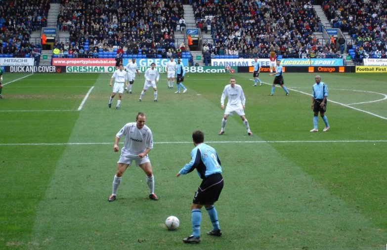
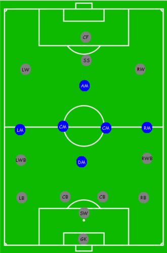

Футбол
Kомандный вид спорта , в котором целью является забить мяч в ворота соперника ногами или другими частями тела (кроме рук) большее количество раз, чем команда соперника. В настоящее время самый популярный и массовый вид спорта в мире
Вратарь
Вратарь — единственный игрок, который может
умышленно касаться мяча руками (не
считая вбрасываний после аута). Он отбивает удары по воротам, перехватывает навесы и пасы в штрафную
площадь и площадь ворот, а также отбирает мячи при выходе «один на один».
Защитник
Игрок, специализирующийся на выполнении оборонительных функций.
Полузащитник
Игрок футбольной команды, действующий между защитой и нападением. Основной задачей полузащитников является помощь игрокам обороны и нападения, в зависимости от игровой ситуации.
Нападающий
- Тактическое описание позиции и роли
- Варианты позиции
- Центральный нападающий
- Крайний нападающий
- Полусредний нападающий
- Оттянутый нападающий
- Ложная девятка